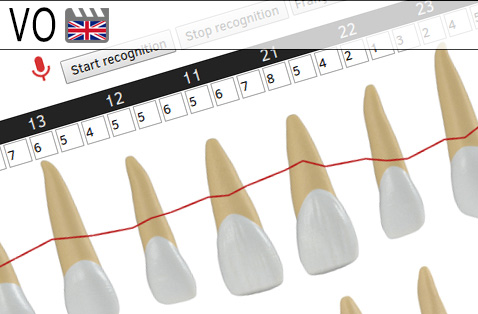

Odontologie - Outils
This tool currently only works with Google Chrome
Cet outil ne fonctionne qu'avec Google Chrome pour le moment
Charting parodontal - Reconnaissance vocale (alpha)

Periodontal charting - Speech recognition (alpha)